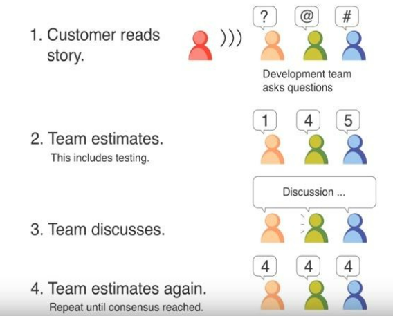

Agile Delivery and Lifecycle
This section breaks down what Agile is and how it can support successful creation of a product or service. The section also covers the stages of an Agile Lifecycle and the different focuses needed throughout the phases.
We follow the core principles of Agile delivery, as defined by GDS:
https://www.gov.uk/service-manual/agile-delivery/core-principles-agile
There are different agile methods you can use, but you should always follow these core principles:
- Focus on user needs
- Deliver iteratively
- Keep improving how your team works
- Fail fast and learn quickly
- Keep planning
We work to the following 6 principles to help us create an agile culture for our service team and organisation:
- Don’t slow down delivery
- Decisions when they’re needed, at the right level
- Do it with the right people
- Go see for yourself
- Only do it if it adds value
- Trust and verify
https://www.gov.uk/service-manual/agile-delivery/governance-principles-for-agile-service-delivery
Common Misconceptions
Agile is often mistaken for the introduction of sprints, stand-ups and other ceremonies. While these are common ways of working often found within an Agile team, they are more accurately attributed to Scrum delivery methodologies. Working in an agile fashion is less about how we do it, and more about why we do it.
Phases
We deliver services and products in line with GDS Agile project phasing guidance - through Discovery, Alpha, Beta to Live and retirement.
Discovery
Discovery comes before you commit to building a service and is about further understanding the problem that needs to be solved.
Duration is typically 4-8 weeks.
https://www.gov.uk/service-manual/agile-delivery/how-the-discovery-phase-works
Alpha
Alpha is where you try out different solutions to the problems you learnt about during Discovery.
Duration may vary but is often around 6-8 weeks.
https://www.gov.uk/service-manual/agile-delivery/how-the-alpha-phase-works
Beta
Beta is where you take your best ideas from Alpha and start building it for real. It also involves thinking about how your service will integrate with (or start to replace) existing services and preparing for the transition to Live. Beta is split into two different sub-phases, Private and Public Beta.
You’ll start out in ‘private beta’. This involves inviting a limited number of people to use your service so you can get feedback and improve it.
Once you’ve improved the service and are confident you can run it at scale, you take an assessment to move into ‘public beta’. This involves opening up your service to anyone who needs it. If you’re replacing a legacy service, keep the legacy service running until your new service moves into its live phase.
Duration of the beta phase has significant variation based on the size and scope of the agreed MVP and general complexity of the project.
https://www.gov.uk/service-manual/agile-delivery/how-the-beta-phase-works
Live
Live entails supporting the service in a sustainable way and continuing to iterate and make continuous improvements to ensure the service or product continues to meet user needs and is compliant.
https://www.gov.uk/service-manual/agile-delivery/how-the-live-phase-works
Your service may eventually need to be retired, for example if policies change or if there’s evidence that users’ needs have changed.
https://www.gov.uk/service-manual/agile-delivery/retiring-your-service
Planning in Agile
Planning is vital to the success of agile working. Planning allows everyone to understand what your vision and objectives are, what you need to do to achieve your objectives and how you know when you’ve achieved them.
We have different levels of planning, generally:
- Lead Delivery Manager is accountable for the co-creation of the strategic direction for their portfolio of services and products, and then for the delivery of the resultant roadmap for their area.
- Delivery Manager is accountable for the delivery of specific deliverables on that roadmap, that contribute to the achievement of the overall objectives and vision for that area.
https://www.gov.uk/service-manual/agile-delivery/planning-agile
Prioritisation
Prioritising what you should work on and in what order is an important part of delivering good products and services, as there will always be competing demands from users, services, policy teams, technical areas, etc.
https://www.gov.uk/service-manual/agile-delivery/deciding-on-priorities
Roadmap
A roadmap is a plan that shows how a product or service is likely to develop over time.
We are working witht the Product Owner community to further develop guidance in this space.
https://www.gov.uk/service-manual/agile-delivery/developing-a-roadmap
Tools and Techniques
Using the right agile tools and techniques helps us to ensure our delivery teams can:
- Self-organise and plan
- Communicate (within the team and with the rest of your organisation)
- Continuously improve the way you work
- Get support from senior responsible officers (SROs) and service managers
- You might also hear these tools and techniques called ‘agile ceremonies and artefacts’.
We are aiming to standardise the tools and techniques we use across DDaT to allow for efficiencies, stability, and more agility (for example, so that people can move around teams easier with less onboarding overhead). However, we recognise that there may be instances where a team needs to tailor the tools and techniques they use depending on the deliverable working to or the environment operating within.
Standard tools and techniques (N.B. Delivery Management is accountable for ensuring teams work in this way or agreeing tailoring when needed):
- SCRUM methodology - this is our primary delivery methodology for building DDaT services and products. SCRUM gives us the opportunity to continually iterate and build on ideas as we move towards the ideals of the user.
- Kanban methodology - we recognise there are some pieces of work that lend themselves to this delivery methodology, on agreement with the delivery team.
- Jira - we use Jira to house and manage our product backlogs.
- Microsoft Teams - we use Teams for all our internal communications.
- Slack - we use Slack for cross-government professional community collaboration.
Below is a link through to the GDS manual that will help guide you through setting up the various tools and techniques needed to run an agile team.
https://www.gov.uk/service-manual/agile-delivery/agile-tools-techniques
Prioritisation and Estimation
To deliver successfully we need to be able to define the features that we are working on, the effort that will be involved in delivering them and how we implement them to ensure we deliver value as quickly as possible.
Establishing priorities is necessary to ensure focus is given to the tasks that will realise value most quickly. Activities that lead to attaining the value may require a sequence of events so prioritisation cannot just be focused on individual backlog items - but in ordering the backlog as a whole, so that we are working to delivering against the strategic objectives most effectively.
Prioritisation is an essential mechanism of agile development. In an agile framwork, prioritisation acts to decide in what order the Delivery Team should work. A prioritisation process helps the Delivery Team to consider the necessary features to create customer value. That maximises the value and the needs to be delivered to the clients and assists the changing requirements.
Prioritisation is important to organisations because prioritising helps in:
- Increasing the success rates of strategic projects.
- Increases focus of senior management teams around strategic goals.
- Doubts are cleared for the operational teams in terms of facing decisions.
- And importantly builds an execution mindset and heritage.
Backlog refinement roles and responsibilities
From the Scrum Guide backlog refinement is:
Product Backlog refinement is the act of adding detail, estimates, and order to items in the Product Backlog. This is an ongoing process in which the Product Owner and the Development Team collaborate on the details of Product Backlog items. During Product Backlog refinement, items are reviewed and revised. The Scrum Team decides how and when refinement is done.
Roles and responsibilities in backlog refinement:
- Product Owner - Overall responsibility for the backlog. Ensuring the ‘right thing’ is built from business knowledge.
- Delivery Manager - Ensures team understand their roles in the refinement. Facilitates.
- Delivery Team - Working to help refine items in backlog. Set the standards of what is expected in the detail of backlog items. Estimating of items in the backlog.
Within backlog refinement and sprint planning meetings, there are various techniques that a Delivery Team can use. Prioritisation and estimating techniques will require judgment calls on what works well in a situation and with a team’s maturity. The Delivery Manager’s role is to work with the team to understand the most appropriate to the team and refine based on learning.
Below are some useful and popular tools we use within our Delivery Teams, when prioritising and estimating.
Prioritisation Techniques
20 Product Prioritization Techniques: A Map and Guided Tour | Blog | Folding Burritos
MoSCoW
MoSCoW prioritisation is a popular prioritisation technique for managing requirements. The acronym covers four categories for any piece of work.
Key stakeholders for the project need to be aligned on the objectives and factors for prioritisation prior to a MoSCoW planning session. Once this agreement is made then all participants can agree on which initiatives to prioritise.
It should also be agreed how the team will settle any disagreements on prioritisation. By establishing rules to resolve differences before they come up delays can be avoided from disagreements.
https://www.youtube.com/watch?v=WitQtcSXFlE
RICE
The RICE scoring model is a prioritisation framework designed to help product managers determine which products, features, and other initiatives to put on their roadmaps by scoring these items according to four factors. These factors, which form the acronym RICE, are reach, impact, confidence, and effort.
Using a scoring model such as RICE can offer product teams a three-fold benefit. First, it can enable product managers to make better-informed decisions, minimize personal biases in decision making, and help them defend their priorities to other stakeholders such as the executive staff.
https://www.youtube.com/watch?v=eKre8vi3ER8
Kano Model
The Kano Model (pronounced “Kah-no”) is an approach to prioritising features on a product roadmap based on the degree to which they are likely to satisfy customers. Product teams can weigh a high-satisfaction feature against its costs to implement to determine whether or not adding it to the roadmap is a strategically sound decision.
The Kano Model is one of many prioritisation frameworks designed to help product teams prioritise initiatives. For example, Kano can help teams determine which features will satisfy and even delight customers. Product managers often use the Kano Model to prioritize potential new features by grouping them into categories. These feature categories can range from those that could disappoint customers to those likely to satisfy or even delight customers.
This strict focus on how customers react to each feature distinguishes the Kano Model from other prioritisation frameworks. The Benefits vs. Cost Model, for example, might use customer satisfaction among its scoring criteria but might also use different criteria, such as increased revenue. With the Kano Model, the key consideration for any new feature is how much it will satisfy users.
https://www.youtube.com/watch?v=A32yHlkVGHk
Estimation Techniques
T-Shirt Sizing
T-shirt sizing is a project estimation and capacity planning tool that helps you track how much time or effort an initiative will take. To do this, you assign each project or task a t-shirt size—from Extra Small to XXL—to represent that task’s relative effort. Depending on how you choose to use this tool, a t-shirt size can represent task scope, effort, complexity, work hours, time estimates—or all of the abov
T-shirt sizing is a helpful tool for your entire team:
Project leads can quickly gauge team capacity.
Individual contributors can communicate their bandwidth and priorities clearly.
Team members can understand who’s doing what by when.
This technique is often used by engineering and software development teams, but any team can benefit from it.
Planning Poker
Planning poker, also known as “scrum poker” and “pointing poker”, is a gamified technique that development teams use to guess the effort of project management tasks. These estimations are based on the entire group’s input and consensus, making them more engaging and accurate than other methods. To help gauge the number of story points for the relevant tasks, teams use planning poker cards, which are similar to poker cards.
At the beginning of a poker planning session, the product owner or customer reviews an agile user story and reads it aloud. A user story is a general and informal explanation of a software feature that describes how it will offer value to the end-user (i.e., the customer). This is then estimated by the team, and then repeated and discussed until a consensus is reached.
Reflecting on Prioritisation and Estimation
It is always a good idea to reflect on any aspects of your delivery to ensure there is constant retrospection and continuous improvement opportunities identified. A simple way of doing this is utilising a ‘lessons learned’ structure (see basic example below). Ideally this should be done as part of the sprint retrospective so you are getting the whole Delivery Team involved (which they will have been during planning / prioritisation / estimation).
In relation to prioritisation and estimation, start by looking at velocity and understanding if the sprint goal(s) were achieved. Look at the work completed, specifically how the work was sized; was it ‘gut feel’ or based on data to make an informed decision. Look at any blockers that could have or have impeded progress during the sprint. Once you have understood and discussed these, you can start sizing work moving forward based on what you have learned. A great tool for this is to utilise the release function in Jira. You can then run reports to track sprint capacity / velocity and use this in estimating future sprints.
With prioritisation, consider and discuss if the requirements of the iteration were fully understood or fully known. Have they been subject to any ‘scope creep’ which slowed completion of that piece of work. Use this to provide feedback to stakeholders / customers / clients why it is important to have the full picture prior to prioritising the workload. Any changes to a piece of work will, in general, slow its progress or impact other items within the backlog or on your roadmap.
Review the tools and/or techniques used for both. Were they the right fit for the team? Not all tools and techniques will fit every agile delivery. So, understanding and learning from this will allow you to improve the accuracy of your planning, prioritisation, and estimation.

When not to use Prioritisation and Estimation
Generally speaking, these tools have a specific time and place to be used - in an agile delivery or the SCRUM framework. DDaT utilises the SCRUM framework for the majority of our deliveries (not always the right agile technique to use however). If using SCRUM, prioritisation should not be used mid-sprint to reassess the sprint goals; this is a kanban technique. If you find the need to reprioritise mid-sprint, then essentially the user story you are trying to deliver/complete is no longer required or outdated. Anything else is most likely scope creep or a request from outside of the Delivery Team. This will require either more in-depth planning and understanding the roadmap and requirements.
Estimation is exactly that; it is a tool to best size a piece of work/user story. It supports backlog refinement and then, what will move into the sprint backlog. It can be learned from for future sprint planning, improved backlog refinement, understand and report on sprint velocity. It does not however, work as a management tool and should not be used as such. For Delivery Manager’s it is a great reference point for discussion in retrospectives, when discussing the outcomes of the sprint and refine / improve the story pointing process.
Deciding on priorities - Service Manual - GOV.UK (www.gov.uk)
Improve the playbook
If you spot anything factually incorrect with this page or have ideas for improvement, please share your suggestions.
Before you start, you will need a GitHub account. Github is an open forum where we collect feedback.
Published: